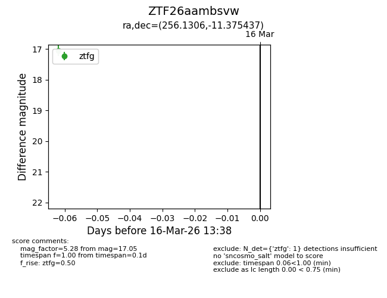
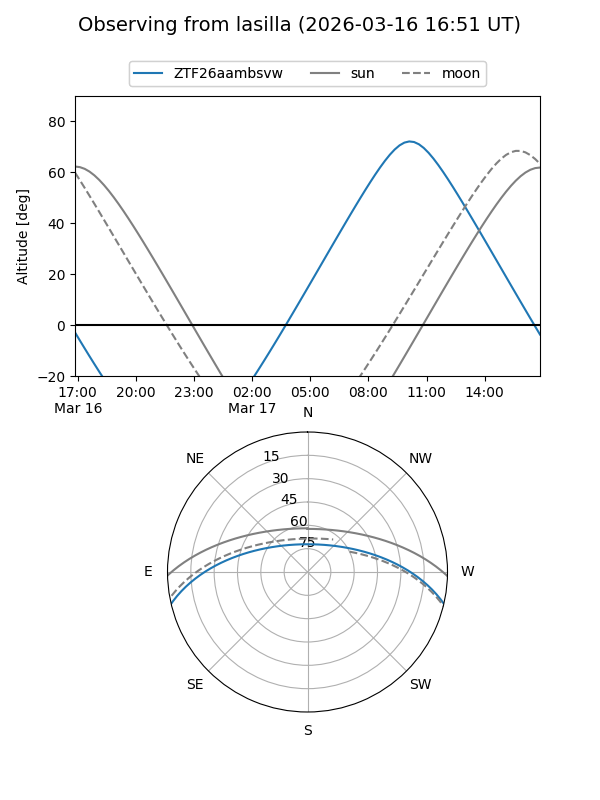
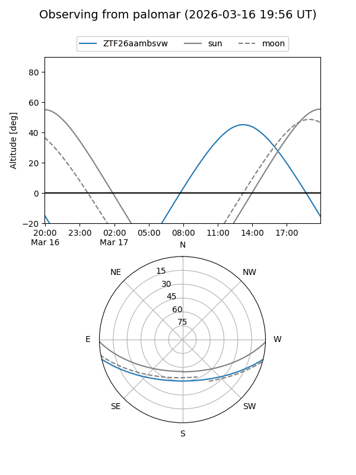

ZTF26aambsvw
Target ZTF26aambsvw at 2026-03-16 13:40
Aliases and brokers:
FINK: link
Lasair: link
ALeRCE: link
alt names
ZTF26aambsvw (ztf,fink_ztf)
Coordinates:
equatorial (ra, dec) = 256.1306,-11.37544
equatorial (HMS+DMS) = 17:04:31.35,-11:22:31.57
galactic (l, b) = (9.6593,+17.60713)
Flags:
Photometry:
last ztfg=17.05
1 ztfg detections
Lightcurve

Visibility


Additional plots